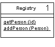

Registry (Реестр)

Паттерн проектирования Registry
Описание Registry
Хорошо известный объект, который используется другими объектами для получения общих объектов и сервисов.
Когда нужно найти какой-нибудь объект, обычно начинают с другого объекта, связанного с целевым. Например, если нужно найти все счета для покупателя, начинают, как раз с покупателя и используют его метод получения счетов. Тем не менее, в некоторых случаях нет подходящего объекта, с которого начать. Например, известен ID покупателя, но нет ссылки на него. Тогда нужен своего рода объект-поисковик, но тогда возникает вопрос - как вы найдёте сам поисковик?
Реестр (Registry) - это глобальный объект по сути своей или, по крайней мере, так выглядит - он может функционировать только будучи глобальным.
Примеры реализации
// Registry Pattern in JavaScript
class Registry {
constructor() {
this.services = new Map();
}
static getInstance() {
if (!Registry.instance) {
Registry.instance = new Registry();
}
return Registry.instance;
}
register(name, service) {
this.services.set(name, service);
console.log(`Registered service: ${name}`);
}
get(name) {
const service = this.services.get(name);
if (!service) {
throw new Error(`Service '${name}' not found in registry`);
}
return service;
}
has(name) {
return this.services.has(name);
}
}
// Service classes
class DatabaseService {
connect() {
console.log('Database connected');
return true;
}
query(sql) {
console.log(`Executing: ${sql}`);
return [{ id: 1, name: 'John' }];
}
}
class EmailService {
send(to, subject, body) {
console.log(`Sending email to ${to}: ${subject}`);
return true;
}
}
// Usage
const registry = Registry.getInstance();
registry.register('database', new DatabaseService());
registry.register('email', new EmailService());
const db = registry.get('database');
db.connect();
const users = db.query('SELECT * FROM users');
const email = registry.get('email');
email.send('user@example.com', 'Welcome', 'Hello!');// Registry Pattern in C++
#include <iostream>
#include <unordered_map>
#include <memory>
class Registry {
private:
static std::unique_ptr<Registry> instance;
std::unordered_map<std::string, std::shared_ptr<void>> services;
public:
static Registry& getInstance() {
if (!instance) {
instance = std::make_unique<Registry>();
}
return *instance;
}
template<typename T>
void registerService(const std::string& name, std::shared_ptr<T> service) {
services[name] = std::static_pointer_cast<void>(service);
std::cout << "Registered service: " << name << std::endl;
}
template<typename T>
std::shared_ptr<T> getService(const std::string& name) {
auto it = services.find(name);
if (it == services.end()) {
throw std::runtime_error("Service not found");
}
return std::static_pointer_cast<T>(it->second);
}
};
std::unique_ptr<Registry> Registry::instance = nullptr;
class DatabaseService {
public:
bool connect() {
std::cout << "Database connected" << std::endl;
return true;
}
};
// Usage
int main() {
auto& registry = Registry::getInstance();
registry.registerService("database", std::make_shared<DatabaseService>());
auto db = registry.getService<DatabaseService>("database");
db->connect();
return 0;
}// Registry Pattern in Go
package main
import (
"fmt"
"sync"
)
type Registry struct {
services map[string]interface{}
mutex sync.RWMutex
}
var (
instance *Registry
once sync.Once
)
func GetInstance() *Registry {
once.Do(func() {
instance = &Registry{
services: make(map[string]interface{}),
}
})
return instance
}
func (r *Registry) Register(name string, service interface{}) {
r.mutex.Lock()
defer r.mutex.Unlock()
r.services[name] = service
fmt.Printf("Registered service: %s\n", name)
}
func (r *Registry) Get(name string) (interface{}, error) {
r.mutex.RLock()
defer r.mutex.RUnlock()
service, exists := r.services[name]
if !exists {
return nil, fmt.Errorf("service '%s' not found", name)
}
return service, nil
}
type DatabaseService struct{}
func (d *DatabaseService) Connect() bool {
fmt.Println("Database connected")
return true
}
// Usage
func main() {
registry := GetInstance()
registry.Register("database", &DatabaseService{})
if dbService, err := registry.Get("database"); err == nil {
if db, ok := dbService.(*DatabaseService); ok {
db.Connect()
}
}
}# Registry Pattern in Python
import threading
from typing import Dict, Any
class Registry:
_instance = None
_lock = threading.Lock()
def __new__(cls):
if cls._instance is None:
with cls._lock:
if cls._instance is None:
cls._instance = super().__new__(cls)
cls._instance._initialized = False
return cls._instance
def __init__(self):
if not self._initialized:
self.services: Dict[str, Any] = {}
self._initialized = True
def register(self, name: str, service: Any) -> None:
self.services[name] = service
print(f"Registered service: {name}")
def get(self, name: str) -> Any:
if name not in self.services:
raise ValueError(f"Service '{name}' not found")
return self.services[name]
class DatabaseService:
def connect(self) -> bool:
print("Database connected")
return True
# Usage
if __name__ == "__main__":
registry = Registry()
registry.register("database", DatabaseService())
db = registry.get("database")
db.connect()<?php
// Registry Pattern in PHP
class Registry {
private static $instance = null;
private $services = [];
private function __construct() {}
public static function getInstance() {
if (self::$instance === null) {
self::$instance = new self();
}
return self::$instance;
}
public function register($name, $service) {
$this->services[$name] = $service;
echo "Registered service: $name\n";
}
public function get($name) {
if (!isset($this->services[$name])) {
throw new Exception("Service '$name' not found");
}
return $this->services[$name];
}
}
class DatabaseService {
public function connect() {
echo "Database connected\n";
return true;
}
}
// Usage
$registry = Registry::getInstance();
$registry->register("database", new DatabaseService());
$db = $registry->get("database");
$db->connect();
?>Использована иллюстрация с сайта Мартина Фаулера.